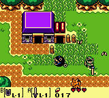
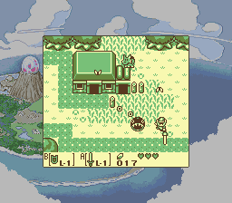
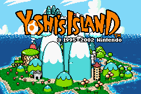
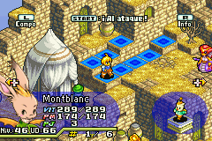
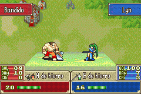
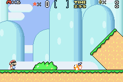
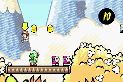

Special Scenery Beta 2011 edition.
This is what I've been working on since last summer, and I think it is a quite good program right now. It is just another GBA emulator, just like VisualBoyAdvance, and it emulates the same: GB, GBC, SGB and GBA.
I've used the GB, GBC and SGB emulation code from GiiBii, so GiiBiiAdvance has the same compatibility (a bit more, I've changed a bit of SGB emulation code). GBA emulation is, on the other hand, not really high. I mean, lots of ROMs work, but some of them just show a black screen, or hang when you try to start the game from the menu... Everything of GBA is emulated (except the serial port), but there are bugs I can't find, I'll work on it until I get a better compatibility. Of course, it emulates all save chips, but some saves aren't compatible with other emulators. It will try to guess the save type if it can't detect it from the ROM. It lets you take screenshots, and GB Printer output is saved as a png image. GB Camera is not emulated yet, though, so if you want to play with that ROM, use GiiBii.
There is also a quite good debugger, with a disassembler, memory viewer, I/O ports viewer, tile viewer, map viewer, palette viewer and sprite viewer. They are different in GBx and GBA mode. If you are playing a SGB game, there is also a SGB things viewer. I have to make it easy to dump/save things, right now it only lets you watch. So... here are some screens:
GBA mode
{kind=link}
{kind=link}
{kind=link}
{kind=link}
GBC mode
{kind=link}
{kind=link}
{kind=link}
{kind=link}
SGB mode
{kind=link}
And the downloads:
So... that's it. I hope this program is useful for somebody. About the splash screen... You can close it by clicking it, or just waiting 4 seconds. It is disabled in the source code.
Oh, the last thing. If you want real SGB emulation, try bsnes. It's an impressive SNES emulator, and lets you load and use a Game Boy ROM with Super Game Boy ROM.
A few more screenshots in GBA mode:
    
Bye!